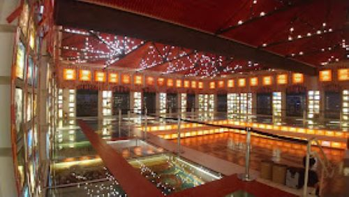

Conheça mais sobre o Paço do Frevo
A Praça Rio Branco, também conhecida como Marco Zero,
é um espaço público localizado no bairro do Recife da cidade homônima,
capital de Pernambuco. O local fica próximo ao Porto do Recife e abriga o Marco Zero da cidade do Recife.
É deste marco que são feitas todas as medidas oficiais de distâncias rodoviárias locais.
